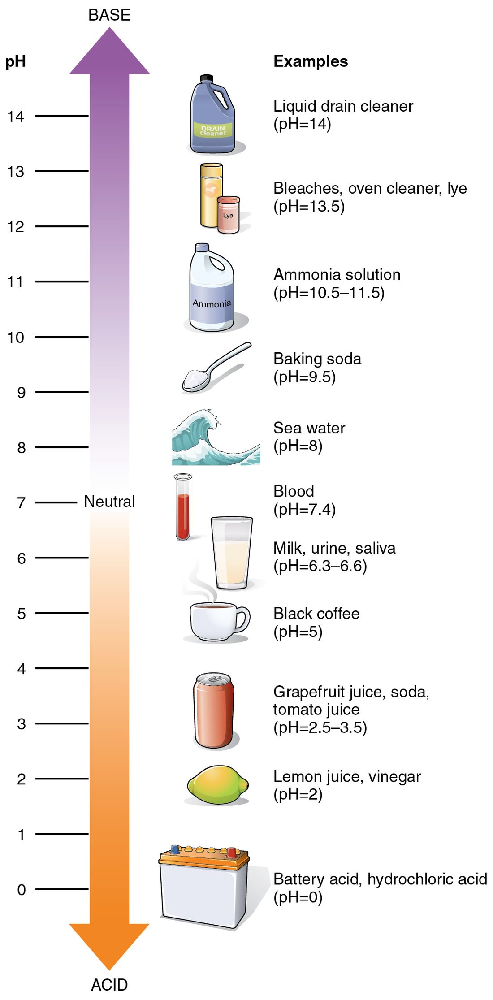

Acids, bases, pH and buffers
1Why this matters
Aisha, 22, runs an all-out 400 m race. A blood sample taken a minute after the finish shows a pH of 7.10, down from her usual 7.40. In a resting patient that number would be an emergency: it means twice as many hydrogen ions in every liter of her blood. Yet within about an hour she is back to 7.40 with no treatment at all. A scale that counts in powers of ten, and the buffers that soak up hydrogen ions, explain both halves of that story.
2What this builds on
3Quick check before you start
1. What is a hydrogen ion (H+)?
- A hydrogen atom with an extra electron
- A hydrogen atom that has lost its electron, leaving a lone proton
- A molecule of hydrogen gas
Show the answer
A hydrogen atom is one proton and one electron. Remove the electron and a lone proton with a +1 charge is left: H+.
- A hydrogen atom with an extra electron:
- Correct: A hydrogen atom that has lost its electron, leaving a lone proton:
- A molecule of hydrogen gas:
2. A fluid keeps the same amount of solute but loses half its water. What happens to the solute's concentration?
- It doubles
- It halves
- It stays the same
Show the answer
Concentration is amount divided by volume. The same amount in half the volume is twice as concentrated.
- Correct: It doubles:
- It halves:
- It stays the same:
3. What happens to a protein when it is denatured?
- Its peptide bonds break and it falls apart into amino acids
- It gains extra amino acids
- It loses its folded shape and stops working, while its sequence stays the same
Show the answer
Denaturation breaks the weak bonds, such as hydrogen bonds and ionic bonds, that hold a protein's fold. The chain stays whole, but its shape and function are lost.
- Its peptide bonds break and it falls apart into amino acids:
- It gains extra amino acids:
- Correct: It loses its folded shape and stops working, while its sequence stays the same:
4Anatomy

With labels hidden, select a box to reveal its label.
5How it works, step by step
- During a sprint, working muscles release extra hydrogen ions into the blood.The hydrogen ion concentration of the blood starts to rise.
- Rising hydrogen ions meet the large store of bicarbonate, a weak base, in the blood.Bicarbonate takes up most of them and becomes carbonic acid, a weak acid that holds on to its hydrogen ions.
- Most of the added hydrogen ions are now held inside carbonic acid instead of floating free.Free hydrogen ions rise far less than they would in unbuffered water, so the pH falls only part of the way.
- Carbonic acid splits into carbon dioxide and water.The lungs breathe the extra carbon dioxide out, and the acid leaves the body for good.
- Hydrogen ions stop pouring in once the sprint ends, and the lungs keep clearing carbon dioxide.The hydrogen ion concentration falls back, and blood pH returns to its normal range of 7.35 to 7.45.
6Core concepts
7A common mistake
The wrong idea: A fall in blood pH from 7.4 to 7.1 is a small change, because 0.3 is a small number.
What actually happens: The pH scale is logarithmic: each whole unit is a tenfold change in hydrogen ion concentration, and every 0.3 units is a doubling. A fall from 7.4 to 7.1 takes the hydrogen ion concentration from about 40 to about 80 nmol/L, twice as many hydrogen ions in every liter. That is why blood pH is reported to two decimal places and why a value of 7.10 is serious.
8Check yourself
Anything you miss goes into your review queue.
1. A sample of urine has a pH of 5, and a sample of fluid from inside the small bowel has a pH of 7. How does their hydrogen ion concentration compare?
- The pH 7 fluid has 2 times more hydrogen ions
- The pH 5 fluid has 2 times more hydrogen ions
- The pH 7 fluid has 100 times more hydrogen ions
- The pH 5 fluid has 100 times more hydrogen ions
Show the answer
The pH values differ by 2 units, and each unit is a factor of ten: 10 × 10 = 100. The lower pH is the more acidic fluid, so the urine at pH 5 holds 100 times more hydrogen ions.
- The pH 7 fluid has 2 times more hydrogen ions: Two errors: the scale is not linear, and a higher pH means fewer hydrogen ions, not more.
- The pH 5 fluid has 2 times more hydrogen ions: The direction is right, but the pH scale counts in powers of ten. Two units is 100-fold, not 2-fold.
- The pH 7 fluid has 100 times more hydrogen ions: The size is right, but the direction is reversed. Lower pH means more hydrogen ions.
- Correct: The pH 5 fluid has 100 times more hydrogen ions: Correct. Two units of pH is a hundredfold difference, and the lower pH has more H+.
2. Mr. Brennan, 63, is found in severe shock. His blood pH is 7.10; a normal value is 7.40. What has happened to the hydrogen ion concentration of his blood?
- It has roughly doubled
- It has risen by about 4%
- It has roughly halved
- It has risen about 30-fold
Show the answer
pH fell by 0.30 units. Because log 2 is about 0.3, a fall of 0.3 doubles [H+]: from about 40 nmol/L at pH 7.40 to about 80 nmol/L at 7.10.
- Correct: It has roughly doubled: Correct. A 0.3 fall in pH is a doubling of hydrogen ions, from about 40 to about 80 nmol/L.
- It has risen by about 4%: About 4% is the change in the pH number itself (0.3 out of 7.4). The pH scale is logarithmic, so the hydrogen ion change is far larger.
- It has roughly halved: Halving would go with a rise in pH of 0.3. His pH fell, so hydrogen ions went up.
- It has risen about 30-fold: A 30-fold change reads the 0.30 as if each tenth were tenfold. Only a whole unit is tenfold; 0.3 units is twofold.
3. Ms. Adeyemi, 40, has a blood pH of 7.29. Which term describes the state of her blood?
- Alkalemia
- Normal blood pH
- Neutral
- Acidemia
Show the answer
Acidemia is blood pH below 7.35. At 7.29 her blood holds more hydrogen ions than normal. The process causing it is an acidosis.
- Alkalemia: Alkalemia is blood pH above 7.45. Hers is below the normal range.
- Normal blood pH: Normal is 7.35 to 7.45. A value of 7.29 is below that band.
- Neutral: Neutral is pH 7.00. Her blood is still slightly basic in chemical terms, but it is too acidic for blood.
- Correct: Acidemia: Correct. Below 7.35 is acidemia.
4. Why can a blood pH outside 7.35 to 7.45 disturb so many body functions at once?
- Hydrogen ions break the peptide bonds of every protein
- Extra hydrogen ions dissolve the fats around each cell
- Hydrogen ions change side-chain charges, altering the shape of proteins
- Acidic blood cannot carry water to the cells
Show the answer
Many amino acid side chains gain or lose a hydrogen ion as [H+] changes, which changes their charge. That disturbs the ionic bonds holding each protein's fold. Shape sets function, and proteins do almost every job in a cell, so many functions change together.
- Hydrogen ions break the peptide bonds of every protein: Peptide bonds are covalent and are not broken by these pH changes. The weak bonds that hold the fold are what change.
- Extra hydrogen ions dissolve the fats around each cell: Lipids are nonpolar and are not dissolved by hydrogen ions. The effect runs through protein shape.
- Correct: Hydrogen ions change side-chain charges, altering the shape of proteins: Correct. Changed charges disturb protein folding, and changed shape means changed function.
- Acidic blood cannot carry water to the cells: Water is the solvent of blood at any pH. The pH effect acts on protein shape, not on water.
5. Put these steps in order to show how your blood handles a burst of hydrogen ions from working muscle.
- Extra hydrogen ions enter the blood
- Bicarbonate takes up the hydrogen ions
- Carbonic acid forms and holds most of those hydrogen ions
- Carbonic acid splits into carbon dioxide and water
- The lungs breathe the carbon dioxide out
Show the answer
The weak base bicarbonate takes up added H+ first, forming the weak acid carbonic acid, which keeps free H+ low. Carbonic acid then splits into carbon dioxide and water, and exhaling the carbon dioxide removes the acid from the body.
- Correct order: 1. Extra hydrogen ions enter the blood 2. Bicarbonate takes up the hydrogen ions 3. Carbonic acid forms and holds most of those hydrogen ions 4. Carbonic acid splits into carbon dioxide and water 5. The lungs breathe the carbon dioxide out
6. A patient with a long-running illness produces extra acid every day. For a while his blood pH stays near normal, but his blood bicarbonate level falls steadily. Then his pH starts to drop quickly. What best explains this pattern?
- His buffer was working in reverse and releasing acid
- Each hydrogen ion buffered used up one bicarbonate, and the store ran low
- Bicarbonate turned into a strong acid once its level fell
- The pH scale becomes linear below 7.35
Show the answer
A buffer holds acid rather than removing it, and every hydrogen ion bicarbonate takes up converts one bicarbonate into carbonic acid. While bicarbonate is plentiful, pH barely moves. Once the store runs low, new acid has little to take it up, so pH falls sharply.
- His buffer was working in reverse and releasing acid: A buffer does not create acid. His falling bicarbonate shows it was taking up hydrogen ions, as a buffer should.
- Correct: Each hydrogen ion buffered used up one bicarbonate, and the store ran low: Correct. Buffers have a limited capacity, set by how much weak base is left.
- Bicarbonate turned into a strong acid once its level fell: Bicarbonate is a weak base and stays one at any level. It becomes carbonic acid, a weak acid, only by taking up H+.
- The pH scale becomes linear below 7.35: The pH scale is logarithmic at every value. The sudden drop comes from losing buffer, not from a change in the scale.
7. You add 1 mL of a 1 mol/L strong acid to a liter of pure water, and the same amount to a liter of blood in a living person. Which result do you expect?
- Both fall to about pH 3
- The water falls to about pH 3; the blood falls by only a few hundredths
- The blood falls further than the water, because blood already holds acid
- Neither changes, because 1 mL is too little to matter
Show the answer
In pure water, 0.001 mol of freed H+ in a liter gives [H+] = 10⁻³ mol/L, pH 3. In blood, bicarbonate takes up nearly all of it and breathing removes the carbon dioxide formed, so the pH falls by only a few hundredths.
- Both fall to about pH 3: Blood is buffered. Bicarbonate takes up most of the added H+, so blood does not approach pH 3.
- Correct: The water falls to about pH 3; the blood falls by only a few hundredths: Correct. Unbuffered water swings by four whole pH units; buffered blood barely moves.
- The blood falls further than the water, because blood already holds acid: The acid already in blood is mostly held as weak carbonic acid alongside plenty of bicarbonate. That pair is what resists the change.
- Neither changes, because 1 mL is too little to matter: In pure water, 1 mL of strong acid raises [H+] ten-thousandfold, from 10⁻⁷ to 10⁻³ mol/L.
9Summary
An acid releases hydrogen ions in water and a base takes them up; strong ones do so almost completely, weak ones only partly. An acid and a base neutralize each other and leave a salt, an ionic compound that separates into ions other than H+ and OH−. pH is the negative log of the hydrogen ion concentration: lower pH means more H+, each whole unit is a tenfold change and each 0.3 units is twofold. Normal blood pH is 7.35 to 7.45. Small departures matter because hydrogen ions change the charges that hold proteins in shape. Blood below that range is acidemia and above it alkalemia; the processes that push it there are acidosis and alkalosis, covered in full later in the course. A buffer, a weak acid paired with its weak base, blunts pH changes by taking up or releasing hydrogen ions. In blood the carbonic acid–bicarbonate buffer does most of that work, and it hands extra acid off as carbon dioxide that you breathe out.